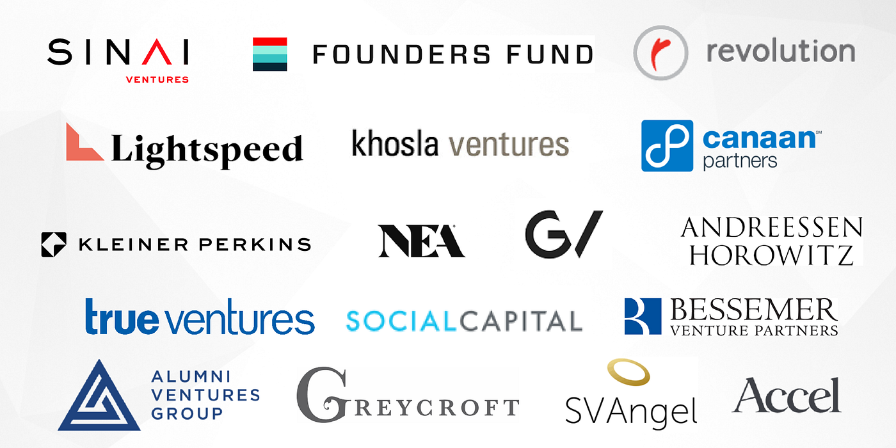

Dec 15, 2021
Writing for Venture capital firms
and a useful data-driven platform for writers who target VCs

While I was writing this article about rankings and blockchain, I thought about Andressen Horowitz venture capital and thought that it could be a good strategy to write about what interest the ventures capital that I am willing to work with because I know that Andressen ventures are now more interested in investing in blockchain technologies while NFX is interested in Marketplace, broadly in investing in technologies that create and/or ease the connection between two or more entities and get value from these connections (connection economy). While I was writing this I have also reminded myself of the speech of this past AOL’s CEO that I was listening to who said in what sector he was willing to invest. Then I have 3 Vcs and not the smallest one that I could target by writing interesting topics and ideas about their field of investment and these fields are actually Blockchain, Marketplace, network effect, and connection economy.
I hope that this strategy will as fast as possible connect you and me with these venture capital firms and help us become these great tech business thinkers that we are seeking to be, but not only, great social founders and entrepreneurs also. You could see that this short insight about myself highlight a need for a data-driven platform that could help people like me know in what sector each venture firm invest and this data-driven platform is about sourcing from the websites of these venture capital firms the list of startups in which they have invested in the past and get statistical relevance about their field of investment. With a frontend that shows this data in one place people like me could know what to suggest to these venture capital firms. This is a simple tech-enabled data-driven platform to build and maybe this is already available somewhere. If you know something like this platform please let me know.